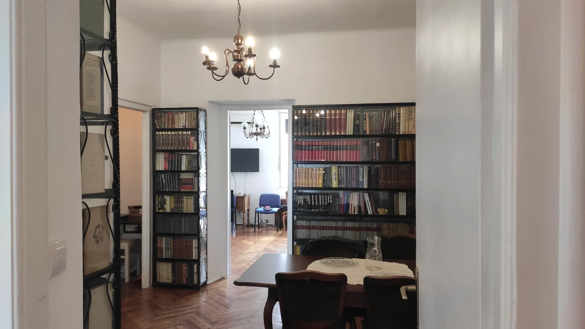
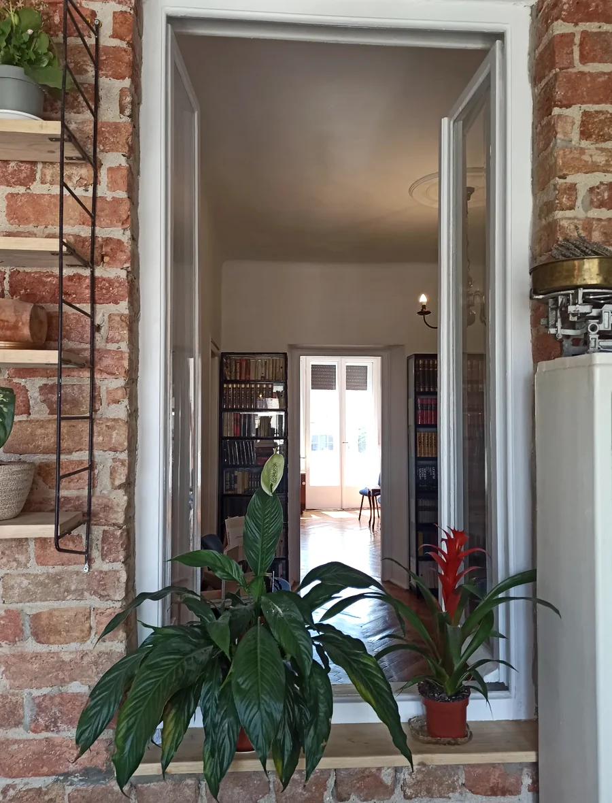
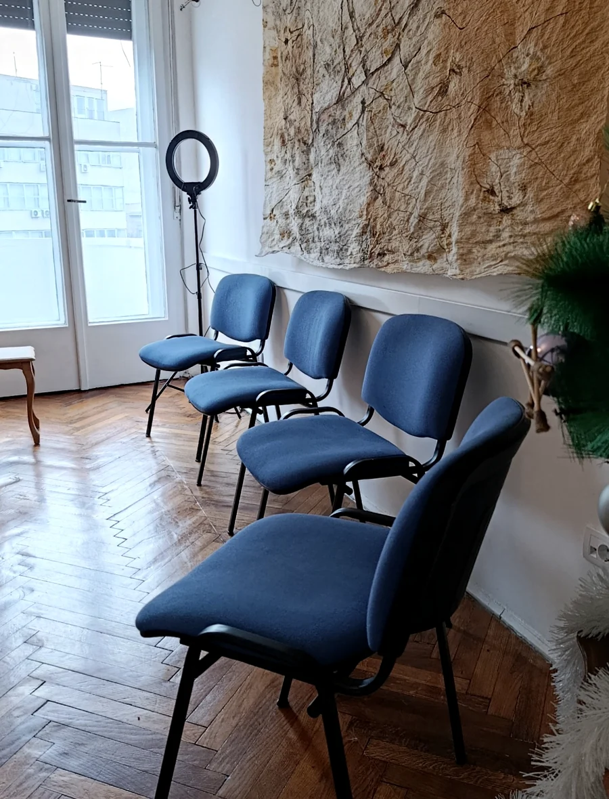
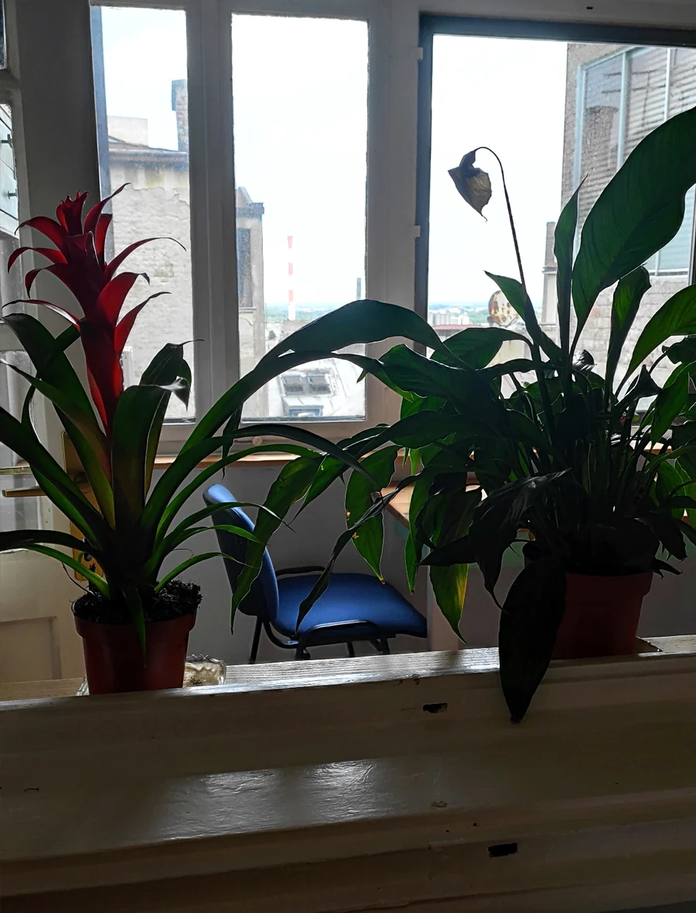
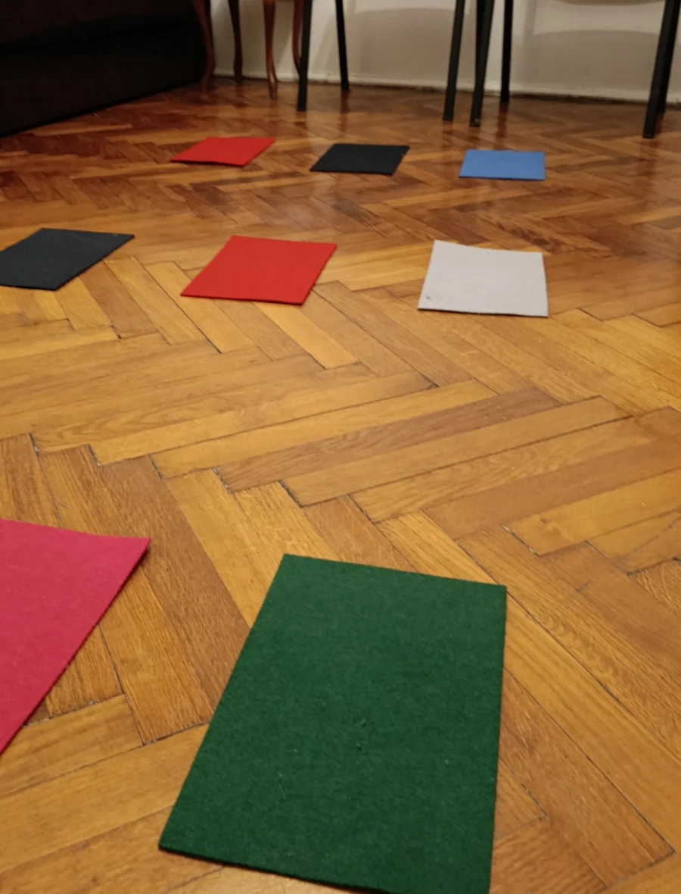

Prostor i lokacija · Beograd
Prostor za individualni i grupni rad u centru Beograda.
Individualni susreti 1:1, ulazno sistemsko mapiranje i grupne radionice održavaju se u prostoru Centrala 24, u centru Beograda.
Prostor je namenjen manjem broju ljudi i organizovan je tako da rad može da se odvija mirno, bez publike, prolaznika i paralelnih aktivnosti.

AdresaMakedonska 15Peti sprat · stan 17
Oznaka na vratimaCENTRALA 24Ulaz i oznaka su navedeni i u podsetniku pred dolazak.
Formati rada1:1, mapiranje i radioniceU zavisnosti od formata koristi se odgovarajući deo prostora.
DolazakCentar BeogradaLift je predviđen za najviše dve osobe.
Kako izgleda
Prostor koji daje dovoljno privatnosti i prostora za rad.
Centrala 24 ima više povezanih soba. Za individualni susret, ulazno mapiranje i grupnu radionicu bira se deo prostora koji odgovara konkretnom formatu.




Praktične informacije
Da dolazak ne postane dodatna neizvesnost.
- Za radionice je preporučen dolazak oko 13:45, kako bi početak u 14:00 mogao da bude miran i tačan.
- Za individualni rad 1:1 i ulazno mapiranje tačno vreme dolaska se dogovara unapred.
- Za radionice ponesite udobnu obuću za prostor. Kafa, čaj i voda su obezbeđeni.
- Ako prvi put dolazite, detaljan podsetnik sa ulazom i praktičnim informacijama dobijate pre termina.
Sledeći korak
Prostor je zajednička tačka, ali format biraš prema situaciji.
Možeš prvo upoznati rad kroz grupu, zakazati ulazno sistemsko mapiranje ili se javiti za individualni rad 1:1. Nije potrebno da sve znaš unapred.